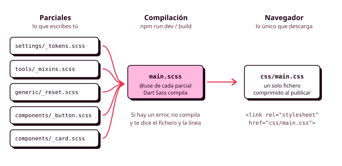

3. Apuntes de Sass
Cuando una hoja de estilos implementa un sistema de diseño completo, crece deprisa: los tokens, el reset, los estilos de las etiquetas y una docena de componentes con sus variantes. En un único fichero de mil líneas es difícil encontrar nada, y en un equipo es imposible que dos personas lo toquen a la vez sin pisarse. Sass es la herramienta que usan casi todos los equipos para repartir el código en ficheros pequeños y para generar con pocas líneas lo que se repite (RA2-j).

Qué es un preprocesador
Un preprocesador es un programa que lee un fichero escrito en un lenguaje parecido a CSS, pero con más posibilidades, y lo compila, es decir, lo traduce a CSS normal. Tú escribes los ficheros de Sass, el compilador genera el main.css y el HTML enlaza ese main.css. El navegador nunca ve tus ficheros de Sass.
CSS ya tiene variables y anidación propias, pero Sass trabaja antes de que el código llegue al navegador, y eso le permite hacer cosas que CSS no puede:
- Repartir el código en muchos ficheros y juntarlos en uno solo.
- Generar código con bucles, como todas las variables de espaciado a partir de una lista.
- Reutilizar grupos de declaraciones con los mixins, como el anillo de foco de todos los componentes.
- Formar nombres de clase con la anidación, que es lo que pide BEM.
- Avisarte con un error si algo no cuadra, en lugar de ignorarlo en silencio.
Instalar y compilar
La versión oficial se llama Dart Sass y se instala con npm dentro de tu proyecto:
Para no escribir el comando de compilación cada vez, guárdalo como script en el package.json:
{
"scripts": {
"dev": "sass --watch scss/main.scss:css/main.css",
"build": "sass --style=compressed --no-source-map scss/main.scss:css/main.css"
}
}
Mientras trabajas, npm run dev vigila tus ficheros y recompila cada vez que guardas. Antes de publicar, npm run build genera el CSS comprimido, que pesa menos y es el que piden las WSG.
Añade node_modules al .gitignore, pero sube el css/main.css compilado, porque es lo que necesita GitHub Pages. Los scripts quedan escritos en el proyecto, así que cualquier persona del equipo que lo descargue compila exactamente igual con npm install y npm run dev.
Lee la terminal
El navegador ignora los errores de CSS, pero Sass hace lo contrario: si algo está mal, no compila y te dice el fichero y la línea. Si un cambio no aparece en el navegador, mira primero la terminal, porque probablemente Sass ha fallado y el main.css se ha quedado en la versión anterior.
SCSS
Sass tiene dos sintaxis, y en este módulo usamos SCSS (ficheros .scss), que tiene las mismas llaves y puntos y coma que CSS. Cualquier CSS válido es SCSS válido, así que puedes pegar en un fichero .scss el CSS que ya tienes y mejorarlo poco a poco.
En SCSS hay dos tipos de comentarios: los de una línea con //, que desaparecen al compilar y son solo para quien lee el código, y los de CSS con /* */, que llegan al main.css.
Anidación
La anidación de Sass funciona como la de CSS, con una diferencia que te va a servir mucho: & se sustituye por el texto del selector, así que puedes pegarle cualquier cosa detrás y formar nombres de clase nuevos.
.card {
padding: var(--space-4);
&:hover { box-shadow: var(--elevation-2); } // .card:hover
&__title { font: var(--font-heading-3); } // .card__title
&--featured { border-width: 2px; } // .card--featured
}
Así, todo un componente queda dentro de un único bloque y el CSS compilado tiene selectores de una sola clase. Los nombres card__title y card--featured siguen la convención BEM, que verás en el apartado 5. Con &__ y &--, casi nunca necesitarás más de un nivel de anidación.
Variables
Las variables de Sass empiezan por $:
Al compilar, Sass las sustituye por su valor y desaparecen. En cambio, las propiedades personalizadas de CSS (--color-primary) llegan al navegador y existen mientras la página está abierta. De ahí sale la regla del proyecto:
- Los tokens van en propiedades personalizadas, porque tienen que cambiar con el modo oscuro, redefinirse en los componentes y llamarse igual que en Figma.
- Las variables de Sass se usan para lo que solo hace falta al compilar: los datos con los que se generan los tokens y los breakpoints. Los breakpoints tienen que ser de Sass porque
var()no funciona dentro de la condición de una media query.
Parciales y módulos
Esta es la razón más importante para usar Sass. Un parcial es un fichero cuyo nombre empieza por guion bajo (_button.scss), que solo se compila como parte de otro. El fichero principal, main.scss, los carga todos con @use, y Sass los junta en un único main.css:
Con un fichero por componente, cada persona del equipo puede trabajar en el suyo sin tocar los de las demás.
@use también da acceso a las variables, funciones y mixins del fichero que carga, a través de su nombre: tokens.$breakpoints. Con as * puedes usarlos sin prefijo, y es lo habitual con las herramientas que usas en todas partes. Cada fichero carga con @use lo que necesita, aunque otro fichero ya lo haya cargado.
En tutoriales antiguos verás @import en lugar de @use. Está obsoleto y desaparecerá, así que usa siempre @use.
Para saber más: @forward y _index.scss
Si una carpeta tiene varios parciales que siempre se usan juntos, puedes crear en ella un _index.scss que los reúna con @forward. Al hacer @use de la carpeta, Sass carga ese fichero:
Mixins
Un mixin es un grupo de declaraciones con nombre que puedes incluir en cualquier regla. Se define con @mixin y se usa con @include, y puede recibir parámetros con un valor por defecto:
// tools/_mixins.scss
@mixin focus-ring($color: var(--color-primary)) {
outline: 3px solid $color;
outline-offset: 2px;
}
Todos los componentes usan el mismo anillo de foco, y si un día decides cambiarlo, lo cambias en un sitio. Un mixin también puede recibir un bloque de reglas, que se coloca donde está @content. Así se escriben los breakpoints con nombre:
@mixin from($bp) {
@media (width >= map.get($breakpoints, $bp)) {
@content;
}
}
.court-list {
@include from("md") { grid-template-columns: repeat(2, 1fr); }
}
Usa los mixins para cosas pequeñas, porque cada @include copia el código en el CSS final. Para reutilizar un componente entero, usa su clase en el HTML.
Para saber más: @extend
@extend hace que un selector herede las reglas de otro agrupándolos en el CSS compilado. Tiene efectos difíciles de prever (cambia el orden de las reglas y no funciona dentro de media queries), y por eso muchos equipos lo evitan. En tu proyecto, usa un mixin pequeño o una clase base.
Funciones
Sass hace cálculos al compilar, y trae funciones organizadas en módulos que se cargan con @use "sass:...": sass:math para los números, sass:map para los mapas, sass:color para los colores. También puedes escribir las tuyas con @function. La más útil para tu proyecto convierte los píxeles de Figma en rem:
// tools/_functions.scss
@use "sass:math";
@function rem($px) {
@return math.div($px, 16px) * 1rem;
}
Con ella puedes escribir en el código los mismos números que ves en el diseño: rem(24px) da 1.5rem.
En tutoriales antiguos verás funciones como darken() o lighten(), que están obsoletas. Además, las funciones de color de Sass no funcionan con propiedades personalizadas, así que para los estados de los colores usa color-mix() de CSS.
Mapas y bucles
Un mapa es una lista de parejas de clave y valor, como un objeto de JavaScript, y es la forma natural de guardar en Sass los datos de tu sistema. Con un bucle @each puedes recorrerlo y generar todos los tokens:
// settings/_tokens.scss
$primitives: (
"blue-200": #99C1F1,
"blue-500": #1A5FB4,
"gray-50": #F6F5F4,
"gray-900": #1E1E24,
);
// Cada semántico: (primitivo en modo claro, primitivo en modo oscuro)
$semantic: (
"primary": ("blue-500", "blue-200"),
"surface": ("gray-50", "gray-900"),
"on-surface": ("gray-900", "gray-50"),
);
// settings/_custom-properties.scss
@use "sass:list";
@use "tokens" as t;
:root {
color-scheme: light dark;
@each $name, $value in t.$primitives {
--#{$name}: #{$value};
}
@each $name, $pair in t.$semantic {
--color-#{$name}: light-dark(var(--#{list.nth($pair, 1)}), var(--#{list.nth($pair, 2)}));
}
}
/* CSS compilado */
:root {
color-scheme: light dark;
--blue-200: #99C1F1;
--blue-500: #1A5FB4;
--gray-50: #F6F5F4;
--gray-900: #1E1E24;
--color-primary: light-dark(var(--blue-500), var(--blue-200));
--color-surface: light-dark(var(--gray-50), var(--gray-900));
--color-on-surface: light-dark(var(--gray-900), var(--gray-50));
}
Los datos quedan en un solo sitio, con la misma forma que las tablas de tu guía de estilo, y añadir un color es añadir una línea al mapa. La sintaxis #{...} se llama interpolación, y sirve para meter el valor de una variable dentro de un nombre o de un texto. Con las propiedades personalizadas es obligatoria: sin ella, Sass escribiría literalmente $value en el CSS.
Ten cuidado con los bucles que generan clases: con tres líneas es fácil crear noventa clases y usar diez, y las WSG piden no enviar al navegador código que no se usa.
Para saber más: condiciones y otros bucles
Sass también tiene @if y @else para las condiciones, @for para repetir entre dos números y @error para detener la compilación con un mensaje. El mixin de breakpoint completo los usa para avisar si alguien pide un breakpoint que no existe:
Cómo organizar los ficheros
Con todo esto ya puedes repartir tu hoja de estilos en parciales, y la pregunta es qué carpetas crear y en qué orden cargarlas. En este módulo seguimos ITCSS, que verás en el apartado siguiente: una carpeta por capa, cargadas de lo más general a lo más concreto.
// main.scss: un adelanto de la estructura de ITCSS
@use "settings"; // tokens y mapas
@use "generic"; // reset
@use "elements"; // estilos de las etiquetas
@use "objects"; // patrones de colocación: .o-stack, .o-grid...
@use "components"; // .button, .card, .slot...
@use "utilities"; // clases de ayuda: .u-visually-hidden...
Antes de seguir
Antes de pasar a ITCSS, comprueba que:
npm run devcompila sin errores y recompila al guardar.- Tus tokens están en mapas y se generan como propiedades personalizadas con
@each. - Cada componente está en su propio parcial y no tiene más de un nivel de anidación.
- No hay ningún
@import. npm run buildgenera unmain.csscomprimido.
Si usas una IA para escribir o revisar tu Sass, anótalo en el CHANGELOG.md y comprueba que lo que te devuelve no usa @import ni funciones obsoletas, porque buena parte del código de Sass que hay en internet es anterior a 2024.
Recursos
- Sass en español, de Manz (lenguajecss.com)
- Documentación oficial de Sass
- Sass Playground, para probar código sin instalar nada